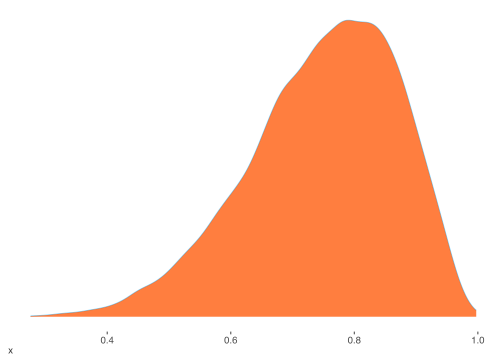
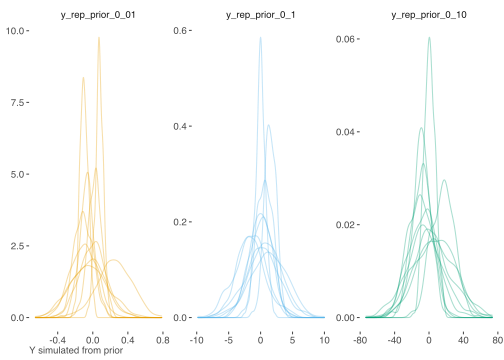

Issues
This section highlights some things to think about, as well as questions that would naturally arise for the applied researcher who might now be ready to start in on their first Bayesian analysis. It provides merely a taste regarding some select issues, and at this point one should be consulting Bayesian analysis texts directly.
Debugging
An essential part of Bayesian analysis is debugging to see if your code and model are doing what it should be doing46, and this especially holds for more complex models. For many models with typical numbers for posterior draws, Bayesian analysis might take several minutes on standard computers or laptops. With big data and/or very complex models, some might take hours or even days. In either case, it is a waste of time to let broken code/models run unnecessarily.
The idea with debugging is that, once you think you have everything set up the way you like, run very short attempts to see if A, the code even compiles, and B, whether it runs appropriately. As such, you will only want to set your warm-up and iterations to some small number to begin with, e.g. maybe not even 100 iterations, and maybe no more than two chains47. Sometimes it will be obvious what a problem is, such as a typo resulting in the program not being able to locate the parameter of interest. Other issues may be fairly subtle, for example, when it comes to prior specification.
Along with initial short runs, one should consider simpler models first, and perhaps using only a subset of the data. Especially for complex models, it helps to build the model up, debugging and checking for problems along the way. As a not too complicated example, consider a mixed model for logistic regression. One could even start with a standard linear model ignoring the binary nature of the target and random effect structure. Getting a sense of things from that, and just making sure that inputs and other things are in place, one can then supply the inverse logit link and change the sampling distribution to Bernoulli. Now you can think about adding the random effect, other explanatory variables of interest, and any other complexities that had not been included yet. Then you can add something like accuracy or other metrics to your generated quantities block
As you identify issues, you fix any problems that arise and tinker with other settings. Once you are satisfied, then try for the big run. Even then, you might spot new issues with a longer chain, so you can rinse and repeat at that point. Stan and other languages like BUGS/JAGS more or less have this capacity built in with model upgrade functions. For example, in Stan you can feed the previous setup of a model in to the main stan function. Use one for your initial runs, then when you’re ready, supply the model object as input to the fit argument, perhaps with adjustments to the Monte Carlo settings.
Choice of Prior
Selection of prior distributions can be a bit daunting for the new user of applied Bayesian analysis. However, in many cases, and especially for standard models, there are more or less widely adopted choices. Even so, we will discuss the options from a general point of view, and some tips for selection.
Noninformative, Weakly Informative, Informative
We can begin with noninformative priors, which might also be referred to as vague, flat, reference, objective, or diffuse depending on the context. The idea is to use something that allows for Bayesian inference but puts all the premium on the data, and/or soi-disant objectivity, though the fact that there is still choice here should make clear that these are not entirely noninformative or objective. As we have alluded to elsewhere, if we put a prior uniform distribution on the regression coefficients (and e.g. the log of \(\sigma\)), this would be a noninformative approach that would essentially be akin to maximum likelihood estimation. One might wonder at this point why we wouldn’t just use vague priors all the time and not worry about overly influencing the analysis by the choice of prior.
As an example, let’s assume a uniform distribution \((-\infty,\infty)\) for some parameter \(\theta\). Without bounds, this prior is improper, i.e. the probability distribution does not integrate to 1. While the posterior distribution might be proper, it also might not be, and it is left the researcher to determine this. One also has to choose a suitable range, something which may not be easy to ascertain. In addition, the distribution may not be uniform on some transformation of the parameter, say \(\theta^2\). A Jeffreys’ prior could be used to overcome this particular issue, but is more difficult for multiparameter settings.
In general, there are several issues with using a noninformative or reference prior. For many models, there may be no clear choice of what to use, and employing some reference to be used automatically isn’t exactly in keeping with Bayesian thinking. In addition, such choices can still have unintended effects on the results. And finally, if you had clear prior information, e.g. from previous research, one should use it.
In practice, many priors we might use could be said to be weakly informative. So instead of being completely ignorant, we can choose instead to be mostly ignorant, vague, but not too vague. As an example, consider our earlier binomial distribution example. Perhaps a reasonable guess as to the probability of making a penalty kick was .75. With that as a basis, we could choose a Beta distribution that would have roughly 80% of its probability between .6 and .9. We know that lower values for the parameters of a beta distribution represent a less informed state of mind, and the mean of the distribution is A/(A+B), so we could just fiddle with some values to see what we can turn up. The following code suggests a \(\mathcal{B}(9,3)\) would probably be a good way to proceed. One can examine such a distribution in the subsequent density plot.
diff(pbeta(c(.6, .9), 3, 1))
diff(pbeta(c(.6, .9), 8, 3))
diff(pbeta(c(.6, .9), 9, 3))[1] 0.513
[1] 0.7625194
[1] 0.7915213
Thus, weakly informative priors can be based on perfectly reasonable settings, and this probably makes more sense than claiming complete ignorance, not to mention they simply work better for parameter estimation relative to flat priors. As mentioned, just some casual thought in many settings will often reveal that one isn’t completely ignorant. Furthermore, if we have clear prior information, in the form of prior research for example, we can then use informative priors based on those results. This again would be preferable to a completely noninformative approach.
Conjugacy
Another consideration in the choice of prior is conjugacy. Consider using the beta distribution as a prior for the binomial setting as we have done previously. It turns out that using a \(\beta(\mathcal{A}, \mathcal{B})\) results in the following posterior:
\[p(\theta|y, n) \propto \beta(y+\mathcal{A}, n-y+\mathcal{B})\]
Thus the posterior has the same parametric form as the prior, i.e. the beta distribution is congugate for the binomial likelihood. In this sense, the prior has the interpretation as providing additional data points. In our regression model, the conjugate setting uses a normal distribution for the predictor coefficients and an inverse gamma for \(\sigma^2\). In the case of exponential family distributions of generalized linear models, there are also natural conjugate prior distributions.
While there can be practical advantages to using a conjugate prior, it is not required for some estimation approaches, and for many more complex models, may not even be possible. However, it might be useful to consider a known conjugate prior as a starting point.
Test your Priors Beforehand
With our regression model, we were dealing with standardized predictors, so even choosing a \(\mathcal{N}(0, 10)\) would be overly vague, as it would be nearly flat for the values from -1 to 1, which is the range we’d expect the coefficients to fall in. The nice part about setting the prior mean on zero is that it has a regularizing effect, shrinking coefficients toward 0, that can help avoid overfitting with smaller samples, but in that case we likely wouldn’t get much of that benefit.
If we want to take advantage of this sort of knowledge, we can set up our model and priors, then sample only as if we had prior estimates. In a regression model for example, let’s say we want to check the prior for our beta coefficients. We want to test several priors, all with different variances, but otherwise centered on zero. The following uses matrix random normal samples and multiplication to quickly get the estimates.
n_sim = 10
prior_beta_0_10 = replicate(4, rnorm(n_sim, mean = 0, sd = 10))
prior_beta_0_1 = replicate(4, rnorm(n_sim, mean = 0, sd = 1))
prior_beta_0_01 = replicate(4, rnorm(n_sim, mean = 0, sd = .1))
y_rep_prior_0_10 = tcrossprod(X, prior_beta_0_10)
y_rep_prior_0_1 = tcrossprod(X, prior_beta_0_1)
y_rep_prior_0_01 = tcrossprod(X, prior_beta_0_01)Now that we have some simulated data, compare the following plot to our observed data range for y of -6.06 to 12.43. It seems pretty clear that that one prior would be too restrictive, while the other is overly relaxed. The \(\mathcal{N}(0, 1)\) seems the best choice. However, we might want to do something different for the intercept, since its value would be on a different scale than the other coefficients, and this might help shift our result to be more in line with the data48.

While not all situations are not as straightforward49, hopefully this gives you an idea of how you might go about this. If using the brms package, it makes this easy with a sampling option sample_prior = 'only'. You can check out my demonstration of that process.
Hierarchical Priors
Not to be confused with hierarchical linear models, hierarchical in the context of Bayesian models often refers to using what are called hyperpriors, or priors on priors. Take for instance our example with regression coefficients. Maybe we wouldn’t know a good standard deviation to use. In this case we might set it as yet another parameter to be estimated, \(\sigma_\beta\), and give it a prior with lower bound of 0, e.g. \(\sigma_\beta \sim \textrm{Half-Cauchy}(10)\), that would have a median of 10 but will result in a final estimate of some other value. Technically this could turn into turtles all the way up, with priors upon priors upon priors. Usually one level is enough though, and might make you feel better for not setting a specific parameter to some value.
{kind=link}
Sensitivity Analysis Revisited
As a reminder, we pointed out in the sensitivity analysis section of the discussion on model checking, one may perform checks on settings for the model to see if changes to them results in gross changes of inference from the posterior. Part of that check should include the choice of prior, whether different parameter values for the same distribution, or different distributions altogether. Doing such a check will give you more confidence in the final selection.
A Simple Check
Gelman has proposed the following as a practical check on how informative your prior might be:
Here’s an idea for not getting tripped up with default priors: For each parameter (or other quantity of interest), compare the posterior sd to the prior sd. If the posterior sd for any parameter is more than 0.1 times the prior sd, then print out a note: “The prior distribution for this parameter is informative.” Then the user can go back and check that the default prior makes sense for this particular example.
If you’re using rstanarm or brms, the bayestestR package will do this check for you.
Summary
It will not take long with a couple Bayesian texts or research articles that employ Bayesian methods to get a feel for how to go about choosing priors50. One should also remember that in the face of a lot of data, the likelihood will overwhelm the prior, rendering the choice effectively moot for simpler models. While the choice might be considered subjective in some respects, it is never arbitrary, and there are standard choices for common models and guidelines for more complex ones to help the researcher in their choice.
Sampling Procedure
There are many ways in which one might sample from the posterior. While Bayesian analysis is highly flexible and can solve a great many statistical models in theory, in practice things can be more difficult. As more complex models are attempted, new approaches are undertaken to deal with the problems in estimation that inevitably arise. In an attempt to dissolve at least some of the mystery, a brief description follows.
Metropolis
We have mentioned that BUGS and JAGS use Gibbs sampling, which is a special case of the Metropolis-Hastings (MH) algorithm51, a very general approach encompassing a wide variety of techniques. The Metropolis algorithm can be briefly described in the following steps:
- Start with initial values for the parameters \(\theta^0\)
For \(t=1,2...N_{sim}\) :
- Sample from some proposal distribution a potential candidate \(\theta^*\), given \(\theta^{t-1}\)
- Calculate the ratio \(r\) of the posterior densities \(\frac{p(\theta^*|y)}{p(\theta^{t-1}|y)}\)
- Set \(\theta^t = \theta^*\) with probability \(\min(r, 1)\), else \(\theta^t = \theta^{t-1}\)
Conceptually, if the proposal increases the posterior density, \(\theta^t = \theta^*\). If it decreases the proposal density, set \(\theta^t = \theta^*\) with probability \(r\), else it remains at \(\theta^{t-1}\). The MH algorithm generalizes the Metropolis to use asymmetric proposal distributions and uses an \(r\) to correct for asymmetry52.
Let’s look at this in generic/pseudo R code for additional clarity (in practice we can take the difference in the log values for step 3):
nsim = numberSimulatedDraws
theta0 = initValue
theta = c(theta0, rep(NA, nsim))
for (t in 2:nsim) {
thetaStar = rnorm(1, theta[t-1], sd)
u = runif(1)
r = exp(logPosterior_thetaStar - logPosterior_theta0)
theta[t] = ifelse(u<=r, thetaStar, theta[t-1])
}One can see the Metropolis-Hastings Example to see the Metropolis algorithm applied to our regression problem.
Gibbs
The Gibbs sampler takes an alternating approach for multiparameter problems, sampling one parameter given the values of the others, and thus reducing a potentially high dimensional problem to lower dimensional conditional densities. We can describe its steps generally as follows.
Start with initial values for some ordering of the parameters \(\theta_1^0, \theta_2^0,..., \theta_p^0\)
For \(t=1,2..., N_{sim}\) :
At iteration \(t\), for \(p=1,2..., P\) :
- \(\theta_1^t \sim p(\theta_1^t | \theta_2^{t-1}, \theta_3^{t-1}, ..., \theta_p^{t-1})\)
- Generate \(\theta_2^t \sim p(\theta_2^t | \theta_1^{t}, \theta_3^{t-1}, ..., \theta_p^{t-1})\)
\(\qquad\vdots\)
- Generate \(\theta_p^t \sim p(\theta_p^t | \theta_1^{t}, \theta_2^{t}, ..., \theta_{p-1}^{t})\)
Again, some generic code may provide another way to understand it:
for (t in 1:nsim) {
for (p in 1:P) {
thetaNew[p] = rDistribution(1, theta[t,-p])
}
theta[t,] = thetaNew
}Hamiltonian Monte Carlo
Stan uses Hamiltonian Monte Carlo, another variant of MH. It takes the parameters \(\theta\) as collectively denoting the position of a particle in some space with momentum \(\phi\) (of same dimension as \(\theta\)). Both \(\theta\) and \(\phi\) are updated at each Metropolis step and jointly estimated, though we are only interested in \(\theta\). We can describe the basic steps as follows.
- At iteration \(t\), take a random draw of momentum \(\phi\) from its posterior distribution
- Update the position vector \(\theta\) given current momentum, update \(\phi\) given the gradient of \(\theta\)
- Calculate \(r = \frac{p(\theta^*|y)p(\phi^*)}{p(\theta^{t-1})p(\phi^{t-1})}\)
- Set \(\theta^t = \theta^*\) with probability \(min(r, 1)\), else \(\theta^t = \theta^{t-1}\)
The overall process allows it to move quite rapidly through the parameter space, and it can work well where other approaches such as Gibbs might be very slow. An example using HMC on the regression model data can be found in the Hamiltonian Monte Carlo Example53.
Other Variations and Approximate Methods
Within these MH approaches there are variations such as slice sampling, reversible jump, particle filtering, etc. Also, one can reparameterize the model to help overcome some convergence issues if applicable. In addition, there exist many approximate methods such as Variational Bayes, INLA, Approximate Bayesian Computation, etc. The main thing is just to be familiar with what’s out there in case it might be useful. Any particular method might be particularly well suited to certain models (e.g. INLA for spatial regression models), those that are notably complex, or they may just be convenient for a particular case. For a fun animated way to explore some different sampling procedures, look here.
Number of draws, thinning, warm-up
Whatever program we use, the typical inputs that will need to be set regard the number of simulated draws from the posterior, the number of warm-up draws, and the amount of thinning. Only the draws that remain after warm-up and thinning will be used for inference. However, there certainly is no default that would work from one situation to the next.
Recall that we are looking for convergence to a distribution, and this isn’t determined by the number of draws alone. The fact is that one only needs a few draws for accurate inference. Even something as low as \(n_{\textrm{eff}}\) of 10 for each chain would actually be fine assuming everything else seemed in order, though typically we want more than that so that our estimates wouldn’t bounce around a great deal from one model run to the next. To feel confident about convergence, i.e. get \(\hat R\) of around 1, plots looking right, etc., we will usually want in the thousands for the number of total draws. We might need quite a few more for increasing model complexity.
A conservative approach to the number of warm-up draws is to set them half the number of runs, but this is fairly arbitrary. Thinning isn’t specifically necessary for inference if approximate convergence is achieved, but is useful with increasing model complexity to reduce autocorrelation among the estimates. I mostly just use it so that the result is not so large in size.
For myself, I typically run models such that the results are based on roughly \(n_{\textrm{eff}} = 1000\) estimates, simply because 1000 is a nice round number, and is enough to make graphical display a bit smoother. For a regression model as we have been running, the setting we used produced 1000 final estimates across 4 chains. Other models might make due with 100000, 50000, 50 respectively. You may just need to feel things out for yourself, but for simpler models you really won’t need much.
Model Complexity
One of the great things about the Bayesian approach is its ability to handle extremely complex models involving lots of parameters. In addition, it will often work better (or at all) in simpler settings where the data under consideration are problematic (e.g. collinearity, separation in the logistic regression setting). While it can be quite an undertaking to set things correctly and debug, re-run fits, and generally go through the trial and error process typically associated with highly complex models, it’s definitely nice to know that you can at least attempt them. It will take some work, but you will also learn a great deal along the way. Furthermore, there are typically tips and tricks that can potentially help just about any model run a little more smoothly.
It really should be a part of any analysis.↩︎
With Stan I sometimes do a 1 iteration compile check first.↩︎
The brms package does in fact automatically treat the intercept in a special manner.↩︎
Even here we’re ignoring our sigma estimate.↩︎
The BUGS book has many examples for a wide variety of applications. The Stan github page has Stan examples for each of those BUGS examples and many more.↩︎
Originally developed in physics in the 50s, it eventually made its way across to other fields.↩︎
Given a proposal/jumping distribution \(\mathcal{J}_t\),
\(r=\frac{p(\theta^*|y)/\mathcal{J}_t(\theta^*|\theta^{t-1})} {p(\theta^{t-1}|y)/\mathcal{J}_t(\theta^{t-1}|\theta^*)}\)↩︎See this entry at David Mimno’s blog for a visualization of HMC, and Betancourt’s Conceptual Introduction to Hamiltonian Monte Carlo.↩︎